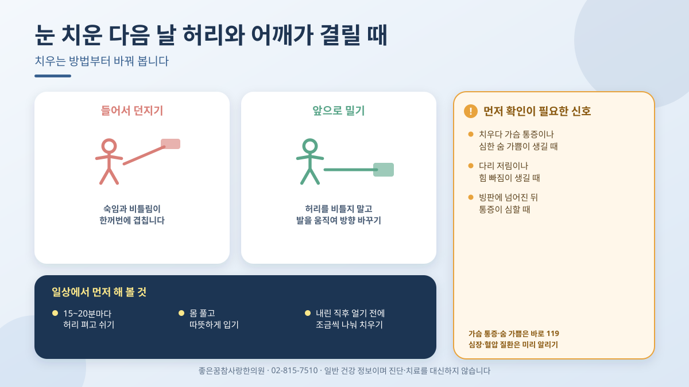

이종호 한의사 감수좋은꿈참사랑한의원 대표원장 (한의사 면허번호 19769)발행 2026-11-24 · 수정 2026-11-26
이 글의 차례
- 왜 이런 불편이 생길 수 있나요
- 자주 하는 오해
- 예를 들면 이런 경우입니다
- 왜 눈을 치운 다음 날 더 아플까요?
- 근육이 결린 것과 다른 불편은 어떻게 나눠 볼까요?
- 먼저 이렇게 여쭙니다
- 스스로 점검해 보세요
- 일상에서 먼저 해 볼 수 있는 것
- 왜 새벽에 치울 때 더 조심해야 할까요?
- 계단과 비탈길은 어떻게 치울까요?
- 얼마나 쉬며 치울까요?
- 눈 치우기 전 5분은 이렇게 준비해 보세요
- 눈을 치운 날 저녁과 다음 날은 어떻게 보낼까요?
- 어깨가 더 결린다면 무엇을 살필까요?
- 찜질할 때는 무엇을 조심할까요?
- 해마다 겨울이면 같은 곳이 결린다면
- 혼자 사는 분이라면 어떻게 할까요?
- 어르신과 함께 사는 가족이라면
- 얼마나 지켜보고, 언제 바로 확인할까요
- 한의원에서 함께 살필 수 있는 경우
- 눈 치우는 도구는 무엇을 쓰면 좋을까요?
- 진료를 받은 날은 어떻게 지낼까요?
- 이렇게 기록해 오시면 상담이 쉬워집니다
- 이런 증상은 먼저 확인이 필요합니다
- 함께 읽으면 좋은 글
상도동처럼 언덕과 골목이 많은 동네는 눈이 오면 집 앞과 계단을 직접 치워야 하는 경우가 많습니다. 아침에 한바탕 눈을 치우고 나면 저녁부터 허리와 어깨가 뻐근하고, 다음 날 아침에는 일어나기도 힘들다는 분이 있습니다. 같은 눈이라도 치우는 방법에 따라 몸의 부담이 크게 달라집니다.
왜 이런 불편이 생길 수 있나요
- 젖은 눈은 생각보다 무거워, 삽으로 들어 옮길 때 허리에 큰 힘이 실립니다.
- 허리를 숙인 채 눈을 들고 옆으로 던지는 동작은 숙임과 비틀림이 한꺼번에 겹치는 자세입니다.
- 추운 날에는 근육이 굳어 있어 평소보다 쉽게 결리고 뭉칠 수 있습니다.
- 빙판길에서 미끄러지지 않으려고 버티는 긴장도 어깨와 허리를 뻣뻣하게 만듭니다.
자주 하는 오해
- 눈 치우기는 금방 끝나는 일이라 준비 운동이 필요 없다고 여기기 쉽지만, 추운 날 굳은 몸으로 갑자기 힘을 쓰면 결리기 쉽습니다.
- 한 번에 많이 퍼서 빨리 끝내야 덜 힘들다고 생각하는 분이 많지만, 한 삽에 조금씩 덜어 여러 번 옮기는 쪽이 허리 부담이 적습니다.
- 땀이 나니 얇게 입고 치워도 된다고 여기기 쉽지만, 땀이 식으면서 몸이 차가워지면 근육이 더 뻣뻣해질 수 있습니다.
- 결리는 곳은 세게 주물러야 풀린다고 생각하기 쉽지만, 다음 날 통증이 심할 때 세게 누르면 오히려 불편이 커지는 분도 있습니다.
예를 들면 이런 경우입니다
- 예를 들어 상가 앞 눈을 혼자 치워야 하는 자영업자라면, 문을 열기 전 한 번에 몰아 치우기보다 눈이 내리는 중간중간 15~20분씩 나눠 밀어 두면 젖어서 무거워지기 전에 정리할 수 있습니다.
- 예를 들어 빌라 계단과 언덕길을 치우는 어르신이라면, 넓은 삽으로 들어 옮기기보다 밀대로 길 가장자리로 밀어 두고, 계단은 미끄럼을 막을 정도만 치운 뒤 무리하지 않는 편이 안전합니다.
- 예를 들어 평소 운동을 하지 않던 직장인이 주말에 한꺼번에 눈을 치운 경우라면, 다음 날 아침 일어날 때 옆으로 돌아누운 뒤 팔로 밀어 천천히 일어나고, 그날은 무거운 물건 드는 일을 미뤄 둡니다.
왜 눈을 치운 다음 날 더 아플까요?
눈을 치우는 동안에는 몸이 데워지고 긴장해 있어 아픔을 덜 느끼는 경우가 많습니다. 그러다 저녁에 몸이 식고 밤사이 가만히 누워 있으면, 다음 날 아침 근육이 굳으며 결림이 한꺼번에 드러납니다.
평소 쓰지 않던 근육을 갑자기 오래 쓴 뒤 하루 이틀 지나 더 뻐근해지는 일은 흔합니다. 이런 결림은 대개 움직이기 시작할 때 심하고, 조금 걸으며 몸이 풀리면 덜해지는 흐름을 보입니다.
근육이 결린 것과 다른 불편은 어떻게 나눠 볼까요?
근육이 결린 경우에는 허리와 어깨가 넓게 뻐근하고, 따뜻하게 하거나 천천히 움직이면 조금 덜해지는 경우가 많습니다. 양쪽이 비슷하게 결리는 분도 많습니다.
반대로 한 점이 날카롭게 아프거나, 특정 자세에서만 찌릿하거나, 어깨를 들 때 한 지점이 걸리는 느낌이 있다면 결림과는 결이 다를 수 있습니다. 이런 느낌은 언제 어떤 동작에서 생기는지 적어 진료 때 알려 주세요.
먼저 이렇게 여쭙니다
- 눈을 얼마나 오래 치우셨나요?
- 삽으로 눈을 들어 옆으로 던지셨나요, 밀어서 치우셨나요?
- 치우는 중에 가슴이 답답하거나 숨이 찬 적은 없었나요?
- 허리와 어깨 중 어디가 더 불편한가요?
스스로 점검해 보세요
- 눈을 들어서 옆으로 던지는 방식으로 치웠다
- 30분 넘게 쉬지 않고 계속 치웠다
- 치우기 전에 몸을 풀지 않았다
- 다음 날 아침 허리를 숙이거나 팔을 들기 어렵다
- 해마다 겨울이면 같은 곳이 결린다
- 땀에 젖은 옷을 바로 갈아입지 않고 한참 지냈다
해당하는 항목이 여럿이라면 진료 때 말씀해 주시면 상담이 쉬워집니다.
일상에서 먼저 해 볼 수 있는 것
- 눈은 들어서 던지기보다 앞으로 밀어서 치우기
- 한 번에 오래 하지 말고 15~20분마다 허리를 펴고 쉬기
- 치우기 전에 몸을 가볍게 풀고 따뜻하게 입기
- 허리를 비틀지 말고 발을 움직여 방향 바꾸기
- 눈이 얼기 전, 내린 직후에 조금씩 나눠 치우기
삽은 손잡이가 가슴 높이쯤 오는 것을 고르면 허리를 덜 숙이고 밀 수 있습니다. 한 손은 손잡이 끝, 다른 손은 삽 가까이 잡아 팔과 다리 힘을 함께 쓰고, 방향을 바꿀 때는 허리를 비틀지 말고 발을 옮겨 몸 전체를 돌리세요. 눈을 다 치운 뒤에는 젖은 옷을 바로 갈아입고 따뜻한 물로 씻어 몸을 데워 주는 것이 좋습니다.
왜 새벽에 치울 때 더 조심해야 할까요?
출근 전 새벽에 서둘러 눈을 치우는 분이 많습니다. 그런데 새벽은 밤새 굳은 몸이 덜 풀린 때이고, 하루 가운데 기온도 가장 낮으며, 길도 어두워 빙판을 알아보기 어렵습니다.
가능하다면 날이 밝은 뒤, 아침을 먹고 몸을 조금 움직인 다음에 치워 보세요. 출근 때문에 새벽에 해야 한다면 현관 앞 다닐 길만 먼저 내고, 나머지는 해가 난 뒤로 미뤄 두셔도 괜찮습니다.
계단과 비탈길은 어떻게 치울까요?
상도동처럼 비탈과 계단이 많은 곳은 평지보다 치우기도 힘들고 미끄러지기도 쉽습니다. 계단은 위에서 아래로 한 칸씩 내려오며 치우고, 한 손은 난간을 잡아 몸을 받쳐 주세요.
계단 전체를 다 치우려 하기보다 사람이 다닐 가운데 한 줄을 먼저 내는 것으로 충분한 날도 있습니다. 비탈길에서는 아래쪽으로 밀어 내리기보다 옆 가장자리로 밀어 두는 쪽이 몸이 앞으로 쏠리지 않아 안전합니다.
얼마나 쉬며 치울까요?
추운 날에도 눈을 치우면 땀이 납니다. 15~20분 치운 뒤에는 실내에 잠깐 들어가 몸을 녹이고 물을 몇 모금 마셔 주세요. 장갑이 젖었다면 마른 것으로 바꾸시는 것이 좋습니다.
손발이 저리도록 시리거나 몸이 떨리기 시작하면 그날 몫은 거기까지로 정하세요. 혼자 다 끝내려 하지 말고, 남은 부분은 해가 나거나 가족이 돌아왔을 때 나눠 치워도 괜찮습니다.
눈 치우기 전 5분은 이렇게 준비해 보세요
- 현관 안에서 제자리걸음 1분으로 몸 데우기
- 어깨를 앞뒤로 천천히 10번씩 돌리기
- 두 손을 허리에 대고 상체를 좌우로 천천히 기울이기
- 무릎을 살짝 굽혔다 펴기 10번
- 장갑과 미끄럼을 막는 신발, 모자 챙기기
- 젖으면 바로 바꿀 수 있게 여벌 장갑과 양말을 현관에 꺼내 두기
- 오늘 어디까지 치울지 미리 정해 두기
이 정도만 해도 굳은 몸으로 갑자기 삽을 드는 것보다 훨씬 부드럽게 움직일 수 있습니다. 숨이 찰 만큼 하실 필요는 없습니다.
눈을 치운 날 저녁과 다음 날은 어떻게 보낼까요?
눈을 다 치운 날 저녁에는 따뜻한 물로 씻은 뒤 어깨와 허리를 천천히 풀어 주고, 평소보다 조금 일찍 잠자리에 드세요. 결린 곳을 세게 주무르기보다 따뜻하게 덮어 두는 쪽이 편한 분이 많습니다.
다음 날 아침에는 일어난 뒤 한두 시간 동안 허리를 깊이 숙이는 일을 미뤄 두세요. 출근길 가방은 가볍게 꾸리고, 오래 앉아 있다면 한 시간에 한 번씩 일어나 어깨를 돌려 주세요.
어깨가 더 결린다면 무엇을 살필까요?
허리보다 어깨가 더 결린다면 삽을 팔 힘으로만 들어 올렸거나, 삽을 몸에서 멀리 뻗어 들었던 경우가 많습니다. 날개뼈 주변과 목 옆까지 뻐근하다는 분도 있습니다.
결림이 조금 가라앉으면 의자에 앉아 두 날개뼈를 뒤로 모았다 풀기를 10번쯤 하고, 어깨를 으쓱 올렸다 천천히 내리는 동작을 해 보세요. 다음에 치울 때는 삽을 몸 가까이 붙이고 다리 힘으로 미는 연습을 해 보시면 좋습니다.
찜질할 때는 무엇을 조심할까요?
결린 곳을 따뜻하게 하면 편해지는 분이 많지만, 뜨거운 찜질팩을 맨살에 오래 대면 피부가 상할 수 있습니다. 수건으로 감싸 15~20분쯤 대고, 잠들기 전에는 떼어 두세요.
전기 매트를 높은 온도로 켠 채 밤새 누워 있는 것도 피부에는 부담이 됩니다. 결린 곳이 붓거나 열감이 느껴진다면 찜질 방법을 진료 때 함께 정해 주세요.
해마다 겨울이면 같은 곳이 결린다면
겨울이 오기 전에 미리 준비해 두면 눈 오는 날의 부담이 줄어듭니다. 평소에 하루 20분쯤 걷고, 엉덩이와 허벅지 근육을 쓰는 운동을 조금씩 해 두면 삽질할 때 허리 대신 다리 힘을 쓰기 쉬워집니다.
밀대처럼 허리를 덜 숙이는 도구를 미리 마련해 두고, 이웃이나 가족과 구역을 나눠 치우는 것도 방법입니다. 지난겨울 어디가 결렸는지 기억해 두셨다가 진료 때 말씀해 주시면, 그 부위를 중심으로 준비할 점을 함께 정합니다.
혼자 사는 분이라면 어떻게 할까요?
혼자 사는 분은 집 앞 눈을 모두 혼자 치워야 한다는 부담을 느끼기 쉽습니다. 건물 관리 담당자나 이웃과 미리 이야기해 구역과 순서를 나눠 두시면 한 사람이 오래 무리하는 일을 줄일 수 있습니다.
눈을 치우러 나갈 때는 휴대폰을 주머니에 넣어 두세요. 무리해서 다음 날 출근조차 힘들어지는 것보다, 오늘은 다닐 길만 내고 나머지는 나눠서 하는 편이 몸에 부담이 적습니다.
어르신과 함께 사는 가족이라면
부모님이 새벽에 일어나 혼자 집 앞 눈을 치우시는 경우가 많습니다. 눈 예보가 있는 날에는 전날 저녁에 누가 언제 치울지 미리 정해 두세요.
어르신이 직접 치우셔야 한다면 짧게 나눠서, 밀대로 미는 방식으로만 하시도록 말씀드려 주세요. 다음 날 어르신이 허리나 어깨가 결린다고 하시면 얼마나 치우셨는지 함께 기억해 두셨다가 진료 때 알려 주세요.
얼마나 지켜보고, 언제 바로 확인할까요
근육이 뭉친 듯 결리는 정도라면 몸을 따뜻하게 하고 무리한 동작을 쉬면서 2~3일 지켜보세요. 사흘이 지나도 숙이거나 팔을 드는 동작이 계속 불편하거나, 일주일 넘게 결림이 이어진다면 아픈 동작과 몸의 균형을 진료로 확인해 보시길 권합니다.
한의원에서 함께 살필 수 있는 경우
- 눈을 치운 뒤 허리가 뻐근하고 숙이기 어려운 경우, 아픈 동작과 몸의 균형을 함께 살핍니다.
- 어깨와 날개뼈 주변이 결리는 경우, 팔을 쓰는 습관과 긴장을 함께 살핍니다.
- 해마다 겨울이면 같은 곳이 아픈 경우, 계절 생활을 함께 정리합니다.
좋은꿈참사랑한의원에서는 어떤 자세로 얼마나 치웠는지 충분히 듣고 허리와 어깨의 움직임을 살핀 뒤, 필요하다고 판단될 때 침·약침·추나·온열 치료 가운데 상태에 맞는 방법을 정합니다.
처음 오시면 데스크에서 기본 정보를 적고, 원장이 맥부터 짚으면서 눈을 치운 시간과 방법, 아프기 시작한 때와 가장 불편한 동작, 심장·혈압 질환과 복용 중인 약을 여쭙습니다. 이어서 허리·어깨·날개뼈의 움직임을 살피고, 필요하다고 판단될 때 초음파로 근육과 힘줄을 확인합니다.
오늘 받을 치료와 이유를 먼저 설명해 드린 뒤 진행하고, 다음 눈 오는 날 치우는 순서와 다음 방문 시기를 안내해 드립니다.
눈 치우는 도구는 무엇을 쓰면 좋을까요?
무거운 쇠삽보다 가벼운 플라스틱 삽이나 넓은 밀대가 허리 부담을 줄이는 데 도움이 됩니다. 밀대는 허리를 숙이지 않고 걸으면서 밀 수 있어 어르신께도 덜 힘듭니다.
미끄럼을 막는 제설제를 뿌릴 때는 장갑을 끼고, 허리를 깊이 숙여 한 줌씩 뿌리기보다 작은 통에 담아 선 채로 흩뿌리세요.
진료를 받은 날은 어떻게 지낼까요?
진료를 받은 날 다시 눈이 오더라도 그날 치우는 일은 되도록 가족에게 부탁하거나 미뤄 두세요. 무거운 물건 들기도 쉬고, 몸을 따뜻하게 하며 가볍게 걷는 정도로 지내시면 좋습니다.
그날 저녁과 다음 날 아침 허리와 어깨의 느낌을 점수로 적어 두시면, 다음 진료에서 그 흐름부터 이어서 살핍니다.
이렇게 기록해 오시면 상담이 쉬워집니다
- 눈을 치운 날짜와 걸린 시간
- 들어서 던졌는지, 밀었는지 등 치운 방법
- 아프기 시작한 시각과 가장 불편한 동작
- 심장·혈압 질환과 복용 중인 약
통증은 0~10점으로 아침과 저녁에 한 번씩 적어 두면 좋아지는지, 그대로인지를 비교하기 쉽습니다. 눈을 치운 곳이 계단인지 평지인지, 혼자 치웠는지도 함께 적어 두면 다음 겨울에 부담을 줄일 방법을 정하는 데 도움이 됩니다.
- 예: 토 08:00~08:40 계단과 골목 / 들어서 던짐 / 저녁 허리 4점, 다음 날 아침 6점
- 예: 일 쉼 / 따뜻한 물로 씻음 / 아침 4점, 저녁 3점
이런 증상은 먼저 확인이 필요합니다
- 눈을 치우다 가슴 통증이나 심한 숨 가쁨이 생긴 경우(바로 응급실)
- 다리 저림이나 힘 빠짐, 빙판에 넘어진 뒤 심한 통증이 생긴 경우
이런 신호가 있으면 한의원보다 가까운 병원이나 응급실을 먼저 찾으세요.
함께 읽으면 좋은 글
- 빙판길에서 넘어질 뻔하고 난 뒤 허벅지와 허리가 뻐근한 것은 어떻게 살피나요?
- 눈길에 미끄러져 엉덩방아를 찧은 뒤 아프면 어떻게 해야 하나요?
- 김장을 하고 나면 허리가 뻐근한 것은 어떻게 대처하나요?

여쭙는 것
- 눈을 얼마나 오래 치우셨나요?
- 삽으로 눈을 들어 옆으로 던지셨나요, 밀어서 치우셨나요?
- 치우는 중에 가슴이 답답하거나 숨이 찬 적은 없었나요?
생활에서 해 볼 것
- 눈은 들어서 던지기보다 앞으로 밀어서 치우기
- 한 번에 오래 하지 말고 15~20분마다 허리를 펴고 쉬기
- 치우기 전에 몸을 가볍게 풀고 따뜻하게 입기
한의원에서 함께 살필 것
- 눈을 치운 뒤 허리가 뻐근하고 숙이기 어려운 경우, 아픈 동작과 몸의 균형을 함께…
- 어깨와 날개뼈 주변이 결리는 경우, 팔을 쓰는 습관과 긴장을 함께 살핍니다.
- 해마다 겨울이면 같은 곳이 아픈 경우, 계절 생활을 함께 정리합니다.
먼저 확인이 필요한 신호
- 눈을 치우다 가슴 통증이나 심한 숨 가쁨이 생긴 경우(바로 응급실)
- 다리 저림이나 힘 빠짐, 빙판에 넘어진 뒤 심한 통증이 생긴 경우
한눈에 보는 표
| 구분 | 핵심 |
|---|---|
| 여쭙는 것 | 눈을 얼마나 오래 치우셨나요? 삽으로 눈을 들어 옆으로 던지셨나요, 밀어서 치우셨나요? |
| 생활에서 해 볼 것 | 눈은 들어서 던지기보다 앞으로 밀어서 치우기 한 번에 오래 하지 말고 15~20분마다 허리를 펴고 쉬기 |
| 한의원에서 함께 살필 것 | 눈을 치운 뒤 허리가 뻐근하고 숙이기 어려운 경우, 아픈 동작과 몸의 균형을 함께 살핍니다. 어깨와 날개뼈 주변이 결리는 경우, 팔을 쓰는 습관과 긴장을 함께 살핍니다. |
| 먼저 확인이 필요한 신호 | 눈을 치우다 가슴 통증이나 심한 숨 가쁨이 생긴 경우(바로 응급실) 다리 저림이나 힘 빠짐, 빙판에 넘어진 뒤 심한 통증이 생긴 경우 |
자주 묻는 질문
눈 치우기 전에 무엇을 하면 좋을까요?
몸을 따뜻하게 입고 허리와 어깨를 천천히 돌려 풀어 준 뒤 시작하세요.
심장 질환이 있는데 눈을 치워도 될까요?
추운 날 힘을 쓰는 일은 심장에 부담이 될 수 있어 주치의와 먼저 상의하고 가족에게 부탁하는 것을 권합니다.
다음 날 일어나기 힘들 만큼 아프면 어떻게 하나요?
무리하게 움직이기보다 옆으로 돌아누운 뒤 팔로 밀어 천천히 일어나고, 통증이 이어지면 상담받으세요.
눈 치운 다음 날 바로 운동을 해도 되나요?
결림이 남아 있다면 하루 이틀은 가벼운 걷기 정도로 지내고, 불편이 줄어든 뒤 평소 운동으로 천천히 돌아가세요.
좋은꿈참사랑한의원은 재진 때 지난번 이야기부터 이어서 여쭙니다. 진료시간과 예약은 오시는 길에서 확인하세요.
어디서 상담받을 수 있나요?
좋은꿈참사랑한의원은 서울 동작구 만양로2길 2 신성빌딩 3층·5층(서울 동작구 상도동, 7호선 상도역 3번 출구 근처)에 있습니다. 한의사 3명(이종호 대표원장, 조영기 수석진료원장, 정원영 진료원장)이 진료합니다. 진료시간은 평일 09:30~20:00(점심 13:00~14:00), 토·일·공휴일 09:30~15:00이며, 방문 전 전화로 확인을 권합니다. 예약은 네이버 예약, 카카오톡 상담, 전화 02-815-7510로 받습니다.
이 글은 일반적인 건강 정보이며 개인의 진단이나 치료를 대신하지 않습니다. 증상이 있거나 복용 중인 약이 있다면 진료를 통해 확인하세요. 치료 효과는 개인마다 다를 수 있습니다.
작성 기준: 일반적으로 알려져 있는 건강 정보를 참고해 정리했습니다(대표원장 감수). 증상 기록은 1~2주 동안 하루 1회, 비슷한 시간에 적어 오시면 지난 상태와 비교하기 쉽습니다.